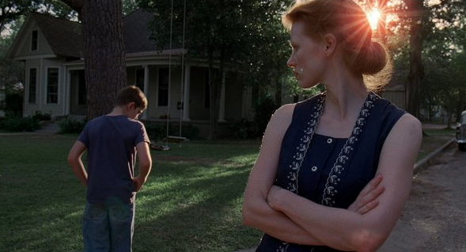

-
Auteur Delusion
by Aaron Cutler February 15, 2012
The past few months have seen a steady stream of year-end critics’ polls, with two films consistently placed toward the top. This is a problem, since both The Tree of Life and Melancholia are awful. A lot of bad films do well on Top 10 lists, but Tree and Melancholia deserve to be fought, in particular, because they represent a noxious kind of filmmaking that can’t be easily dismissed. They are not dull, impersonal, or technically unsound, as most bad movies are—their common problem lies in vision. Each of these films sets out to do nothing less than proclaim a statement about the world and humanity’s place within it, but with a vision that is both ordinary and incoherent.
Tree has placed higher in more polls, taking the top slot in surveys conducted by Film Comment, Sight & Sound, and IndieWire. Terrence Malick’s film links a businessman’s boyhood memories of 1950s Texas to the creation of the world, dinosaurs included. Many reviews have compared Tree to the work of the experimental filmmaker Stan Brakhage, and there’s some sense to this. Both directors use a rapid editing scheme that’s more associative than narrative: you’re asked to create the connections between shots rather than having them spelled out for you.
Yet Brakhage’s approach differs greatly from Malick’s. In Brakhage, viewers must supply their own meaning by learning literally how to see anew. Obscured, distant objects shift in and out of focus, coated in black or deep red light: it becomes a struggle to even figure out what is being looked at. Malick’s film, by contrast, uses clear bright light and keeps everything in focus, even within its close-ups. Many reviews have called the film beautiful, but if that is so, it’s a very conventional form of beauty — the kind that purports to show everything, and in so doing, soon risks growing dull.
Viewers who call The Tree of Life fragmented or abstract are likely referring to the film’s non-linear chronology rather than its visual presentation. Although the viewer may at times miss the context of an image (for instance, exactly why a woman is crying), the subject of the image is never in question. At any given moment, no matter how fast or slow the movement, you know exactly what you’re looking at. The more the film unmoors from a story, the more self-evident the imagery becomes, creating what one writer has described as the feeling of watching a 138-minute trailer for The Tree of Life. The majority of the images are clear, straightforward, and literal, so much so that they could be read easily even if divorced from the rest of the movie. The film further freights them with glowing light, swirling cameras, and loud classical music, catapulting us towards the capital-S Sublime.
The dialogue in Tree sinks into single-mindedness, as Malick’s method can’t develop character save in the most cursory of ways. The film doesn’t have individuals as much as presences, not scenes as much as impressions. Thus words end up serving either of only two functions, directly advancing the story of an adolescent maturing — son to Dad: “I hate you” — or illustrating the theme of Man figuring out his place in the universe. It could be argued that Malick is using fiction to explore philosophical issues, witness the filmmaker’s background as a translator of Heidegger, yet every object and person in this film is so fixed that it’s hard for the story to deepen our understanding of the film. In the film’s search for why the universe exists, one senses that it attaches great importance to the binary it poses between the way of Nature and the way of Grace, though it’s hard to tell what they are. What is Nature and what is Grace? Was this scheme really better than a thousand others? It would be easy to read the mother as Grace, in which case Grace is a smiling mute, and the father is Nature, an equally distant and impersonal force. But the mother spends a lot of time on the grass, and the father spends a lot of time playing classical piano, and in the rare moments when the mother and father interact—like during a skirmish at the dinner table—they stop being personifications of either Nature or Grace. So what use are these terms?
Lars von Trier’s Melancholia , which many critics have favored even more than Tree, appears at first glance like a reversal of Malick’s cosmology. If Tree exalts the world, ending with images of unity and eternal life, Melancholia condemns it, focusing on ugly people who try to destroy each other before the apocalypse destroys them. We meet a wedding caterer who’s so incensed by the bride’s lateness that he shuns her with a hand over his face every time they cross paths; an embittered mother who gives a loud anti-toast declaring that marriage stinks; a wealthy brother-in-law, mouthing off about how the bride isn’t enjoying herself at the party he paid for; a sister who tries to blackmail the bride into enjoying herself; and the central wife-to-be herself, who suddenly decides she’s not happy, shoves her husband off, and later in the night rapes another man. What’s missing is any sense of why we should care about these people in the first place. When dehumanized people are cruel to each other, there’s little to do but wish you were watching something else.
Reviews have praised von Trier’s Melancholia for its insight into depression, but what is that insight, exactly? Justine, played by Kirsten Dunst, turns nihilistic because her psychic powers are able to reveal everything from the number of beans in a jar to the way in which the world will end. And the world is ending, which she thinks gives her the right to hurt people — plus a horse for good measure. But exploring depression through the hypothesis that a depressed person has special knowledge of the immanent apocalypse is like exploring racism through the hypothesis that other races are actually inferior. A more difficult question would be why someone who doesn’t have special knowledge of our encroaching doom falls under depression. Depression is a serious problem that needs greater exposure in movies, but not like this.
Melancholia, like The Tree of Life, is ultimately a fantasy film. Both films present insular, self-contained worlds, bolstered with special effects. Both are carefully-crafted versions of the kind of gee-whiz blockbusters we’re used to. This may have something to do with why both films have done so well with critics. In an era where large-scale filmmaking is often careless and disposable, a high-profile work that takes itself seriously (let alone its audience) can feel like a relief. Both Melancholia and Tree are crafted with an eye toward sustaining the personality cult of their respective directors. Contemporary film criticism is often marked by a built-in form of power worship called auteurism. Auteurism praises films for expressing a unique point of view, assumed to be the point of view of the filmmakers. In articulating his approach, the auteurist critic does something which lies between uncovering a hidden hand and replacing a film of fiction with an imaginary documentary of the director speaking. But it feels incomplete to praise someone for expressing a point of view if there is no examination of whether that point of view is sound. The Tree of Life and Melancholia both have personality where many other films have only milquetoast convention, but if the personality is despicably naive or naively despicable, how seriously should you take its view of life?